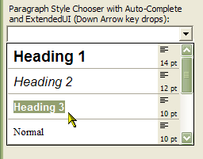

VB5 Owner Draw Combo List Control (40K)
VB5 Owner Draw Combo List Control (40K)
 VB5 Owner Draw Combo List Full Source (255K)
VB5 Owner Draw Combo List Full Source (255K)
 VB6 Owner Draw Combo List Control (41K)
VB6 Owner Draw Combo List Control (41K)
 VB6 Owner Draw Combo List Demonstration (153K)
VB6 Owner Draw Combo List Demonstration (153K)
 VB6 Owner Draw Combo List Full Source (239K)
VB6 Owner Draw Combo List Full Source (239K)
 19 Dec 2002
19 Dec 2002
VB6 Version Added
 Ole Guid and interface definitions (OleGuids.Tlb)
Ole Guid and interface definitions (OleGuids.Tlb)
 Using the System Image List with (and without) vbAccelerator Controls
Using the System Image List with (and without) vbAccelerator Controls
 Subclassing Without The Crashes
Subclassing Without The Crashes
 vbAccelerator ImageList Control and Class v2.0
vbAccelerator ImageList Control and Class v2.0

Owner Draw Combo and List Boxes Version 2.1
Customise Combo Boxes and List Boxes with this control
Owner draw combo and list boxes are an excellent way to improve the look and feel of your application. However, there is little support for them in Visual Basic. The only owner-draw combo box supplied is the Checked list box style, but this is a preset list box style with no possibility for customisation. Here I provide a new control, completely written in Visual Basic, which does all the hard work of setting up an owner draw combo or list box. It also provides some great looking preset implementations:
- Choosing colours
- Choosing system colours
- Choosing fonts
- Drawing combo or list boxes with icons, indentations and different font and fore/back colours for each item
- Selecting paragraph styles, similar to the paragraph picker in Word
Owner Draw Combo Boxes and List Boxes in the Win32 API
Creating owner drawn combo boxes or list boxes is relatively straightforward, but leads to rather a lot of non-Basic style coding. When the control is created, the application should add CBS_OWNERDRAWVARIABLE (for combo boxes) or LBS_OWNERDRAWVARIABLE (for list boxes) to the Windows Style bit (this cannot be done after the control is created, however).
Having done this, Windows no longer draws the control. Instead it sends a WM_DRAWITEM message whenever a portion of the control needs to be repainted. This passes a pointer to a DRAWITEMSTRUCT structure filled out with what needs to be drawn and where:
Type DRAWITEMSTRUCT
CtlType As Long ' -Not needed
CtlID As Long ' -The ID of the control when created
ItemId As Long ' -The ListIndex of the item to draw
ItemAction As Long ' -What action is causing the draw call
ItemState As Long ' -The state of the item to be drawn
hwndItem As Long ' -The hWnd of the window to draw in
hDC As Long ' -The DC of the window to draw in
rcItem As RECT ' -The bounding rectangle of the item to be drawn
itemData As Long ' -The item data of the item to be drawn
End Type
You then respond to this message by drawing the item into the DC as required.
In addition, whenever an item is added to the list box, Windows sends a WM_MEASUREITEM message. This contains a pointer to a MEASUREITEMSTRUCT structure that the application can fill in with the size of the item.
Owner Draw Combo and List Boxes in Visual Basic
In practice, doing this in Visual Basic is not simple. Firstly, you cannot take an existing Combo Box or List Box and then add the required owner-draw style bit - it has no effect, and at best will cause the control not to operate correctly.
So instead you have to create a new window by calling CreateWindowEx. This means there is a lot of hard work required to make the control respond like a normal VB control. The worst problem is with focus. Normally you do not need to worry about Focus because VB implements all the methods required to set focus to and from other OCX controls. However, if you create a non-OCX window using CreateWindowEx, VB's default methods have no idea whatsoever how to handle it. Focus continues to work in VB as if the window you created did not exist, except when you click on the window with the mouse, in which case VB fails to understand that any change in focus has occurred.
Focus setting for OCX controls is done properly by implementing the OLE IOLEInPlaceActiveObject interface. However, this interface is resolutely hard-coded into VB UserControl's so it is very hard to get at. The first release of this control attempted to hack around this problem by subclassing the WM_SETFOCUS message and responding in such a way that VB no longer had any control. There were many problems with this, such as the control failing to operate on MDI forms, GotFocus and LostFocus events not firing and VB getting confused about which the ActiveControl was.
Version 2 of the control fixes all the focus problems by implementing the IOLEInPlaceActiveObject interface. It does this using some seriously hardcore code developed by Mike Gainer, Matt Curland and Bill Storage. This replaces the UserControl's standard OLE vtable during the UserControl_Initialise event, allowing the IOLEInPlaceActiveObject interface to be overridden by local VB versions of these functions. Using this in combination with responding to all WM_SETFOCUS and WM_MOUSEACTIVATE messages allows the correct response to focus to be coded in. If you are attempting to create a VB control which uses CreateWindowEx, and your control has to get focus, you need to download and check out this code!
To get the rest of the features working is fairly straightforward (but again rather un-basic like - a lot of copying memory to and from pointers is required), and essentially consists of intercepting WM_COMMAND, WM_MEASUREITEM and WM_DRAWITEM notification events and translating VB's methods (List, ListIndex etc) into the equivalent SendMessage calls.
Using the ODCboLst Control
When you place a new instance of ODCboLst onto a form, the primary items relating to owner draw operation are the ClientDraw and Style properties.
The Style property allows you to choose what type of control you get. This is similar to the Style property of a normal combo box or list box, except that both are provided in the same control, and also simple list boxes are not supported (does anyone ever use these?) The settings are fairly self-explanatory:
- ecsDropDownCombo = 0
- ecsDropDownList = 2
- ecsListBox = 4
- ecsListBoxMultiSelect = 5
- ecsListBoxChecked = 6
The ClientDraw property determines how the control is rendered, and what options you will have to draw into the control. The settings for this are:
- ecdNoClientDraw = 0
- ecdDefaultDrawThenClient = 1
- ecdClientDrawOnly = 2
- ecdColourPickerWithNames = 3
- ecdColourPickerNoNames = 4
- ecdSysColourPicker = 5
- ecdParagraphStyles = 6
- ecdFontPicker = 7
These styles will be covered in turn.
ecdNoClientDraw
In this style, you are not allowed to do any drawing yourself. All drawing is done internally in the control using the default drawing method. The default drawing method supports the following properties for each item in the control:
- ItemForeColor(n)
Sets/gets the colour text will be drawn in for the item. If set to -1, the control's text colour will be used. - ItemBackColor(n)
Sets/gets the back colour for the item. If set to -1, the control's back colour will be used. - ItemFont(n)
Sets/gets the font for the item. If this is not specified, or set to nothing, the control's font will be used. - ItemIcon(n)
Sets/gets the zero-based index of an image within an ImageList to be drawn for the item. In order for this to work, the control's ImageList property must be initialised. Set the property either to a Visual Basic ImageList control, or to a valid ImageList handle. - ItemIndent(n)
Sets/gets the indentation, in pixels, from the left margin which will be left before the item is drawn. - ItemHeight(n)
The height of the item in pixels. If not specified, the default of 20 pixels will be used. - ItemXAlign(n)
Sets/gets the horizontal alignment of the item's text within its boundary. The default is left aligned (eixLeft). - ItemYAlign(n)
Sets/gets the vertical alignment of the item's text within its boundary. The default is top aligned (eixTop). If you set the vertical alignment to centred or vertical, only one line of text will be shown. - ItemUnderline(n)
Whether a ruling will be drawn underneath the item (spans the whole control width regardless of indentation). - ItemOverline(n)
Whether a ruling will be drawn over the item (spans the whole control width regardless of indentation).
ecdDefaultDrawThenClient
This mode performs the same as ecdNoClient except that once it has finished painting it raises a DrawItem event which allows you to perform extra drawing on the list items. This event is described in ecdClientDrawOnly next.
ecdClientDrawOnly
In this mode, the control makes no attempt at drawing, except that it selects the font appropriate to the item into the control's drawing DC. It raises a DrawItem event to the owner form, which should draw the item itself. The parameters for the DrawItem event are as follows:
- Index As Long
The ListIndex of the item to draw. - hDC As Long
The hDC to draw the item into. - bSelected As Boolean
Whether the item is selected or not. - bEnabled As Boolean
Whether the item is enabled or not. - LeftPixels As Long
The left-hand corner of the area occupied by the item in pixels. - TopPixels As Long
The top corner of the area occupied by the item in pixels. - RightPixels As Long
The right-hand corner of the area occupied by the item in pixels. - BottomPixels As Long
The bottom corner of the area occupied by the item in pixels. - hFntOld As Long
This is the handle to the font in the control before ODCboLst.OCX selected the appropriate font.
The "Line Style and Texture Pickers" in this section provides sample source on how to use this method. The sample uses GDI methods to the drawing, however you could equally use VB drawing methods to draw into a picture box with AutoRedraw set to True and then use one call to BitBlt to transfer the item to the DrawItem hDC if you are more comfortable with VB's drawing methods.
ecdColourPickerWithNames
This style causes ODCboLst to draw a colour picker box. All drawing is done internally in the control using the default drawing method. The drawing method supports the following properties for each item in the control:
- ItemBackColor(n)
Sets/gets the colour that will appear in the colour sample box next to each item in the combo box.
ecdColourPickerNoNames
This style is the same as ecdColourPickerWithNames except that it shows colour sample boxes only.
ecdSysColourPicker
This style is the same as ecdColourPicker, except that it preinitialises the colours to the system colours.
ecdParagraphStyles
This mode performs the same as ecdNoClient except that once it has finished the default paint it additionally paints a box on the right hand side showing the text centring and font sizes. This style is aimed at setting up a paragraph style selector similar to the one in Word.
ecdFontPicker
This mode performs the same as ecdNoClient except the combo/list box is initialised with all the screen and printer fonts on the system and it draws a TT/printer icon next to the font.
Other Additional Properties and Methods
In addition to the owner-draw related properties and methods, the following are also provided:
- Sub AddItemAndData(sItem As String, [lIconIndex As Long = -1], [lIndent As Long], [lForeColour As OLE_COLOR = -1], [lBackColour As OLE_COLOR = -1], [lItemData As Long], [lExtraData As Long], [lHeight As Long = -1], [eTextXAlign As EItemXAlign = eixLeft], [eTextYAlign As EItemYAlign = eixTop], [fntThis As StdFont])
This method allows you to add an item but also set the extended properties of each list item at the same time. If you have a lot of items to add, and you are setting one or more extended properties, it will be considerably quicker to use this method than the AddItem method followed by the individual extended properties. - Sub InsertItem(sItem As String, lIndex As Long)
This method is the same as AddItem except it inserts after the index lIndex. - Sub InsertItemAndData(sItem As String, lIndex As Long, [lIconIndex As Long = -1], [lIndent As Long], [lForeColour As OLE_COLOR = -1], [lBackColour As OLE_COLOR = -1], [lItemData As Long], [lExtraData As Long], [lHeight As Long], [eTextXAlign As EItemXAlign = eixLeft], [eTextYAlign As EItemYAlign = eixTop], [fntThis As StdFont])
This method is the same as AddItemAndData except it inserts after the index lIndex. - Property ImageList As Variant
Assigns a VB ImageList control or valid handle to an ImageList to the control. This provides a source for icons under the default drawing scheme. Note that you must use a ComCtl32 compatible Image List - the one provided in MSComCtl.OCX (VB6 Common Controls) is not compatible. - Property DropDownWidth As Long (combo box styles only)
Allows the drop down size to be changed. Set to > 0 to set the width of the drop down portion of the combo box in pixels, or to <=0 to use the default. - Property ExtendedUI As Boolean (ecsDropDownList Style only)
Set to True if you wish the combo box to drop down in response to the Down Arrow rather than the F4 key. - Function FindItemIndex(sToFind As String, [bExactMatch As Boolean = False]) As Long
Attempts to find the item matching sToFind in the control. If bExactMatch is True, the control will search for an exact match, otherwise it will match the characters in sToFind against the first characters in the list items. Returns the ListIndex of the item if found, -1 otherwise. - Property MaxLength as Long (ecsDropDownCombo Style only)
Sets the maximum number of characters which can be typed into the edit box section of the combo box. - Sub SelectRange(IndexStart As Long, IndexEnd As Long, bState As Boolean) (ecsListBoxMultiSelect and ecsListBoxChecked only)
Sets the selection state for the items from IndexStart to IndexEnd to bState. - Sub ShowDropDown(bState As Boolean) (Combo boxes only)
Drops down a combo when bState is True, closes it when bState is False. - Sub ShowDropDownAtPosition(XPixels As Long, YPixels As Long, [WidthPixels As Long], [HeightPixels As Long]) (Combo boxes only)
Same as ShowDropDown except it only allows the drop down to be shown and additionally allows the drop down to be positioned. Use this to draw the drop down portion of a combo box in response to e.g. clicked a command button.
Additional Events
- DropDown (Combo Boxes only)
Raised when the combo is dropped down. - CloseUp (Combo Boxes only)
Raised when the combo is closed.